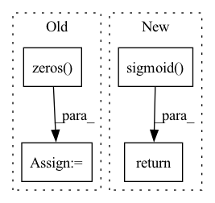

Pattern ID :26239
Before Change
for num_nodes in nums_nodes:
output_node_features = nodes_output[id:id + num_nodes, :]
output_nodes = nodes[id: id + num_nodes]
beta = torch.zeros( self.items_total, 1) .to(nodes.device)
beta[output_nodes] = 1
embed = (1 - beta * self.alpha) * items_embedding.clone()
embed[output_nodes, :] = embed[output_nodes, :] + self.alpha[output_nodes] * output_node_features
batch_embedding.append(embed)
id += num_nodes
batch_embedding = torch.stack(batch_embedding)After Change
:return:
items_embedding = self.item_embedding(torch.tensor([i for i in range(self.items_total)]).to(nodes.device))
alpha = torch.sigmoid( self.alpha)
embed = (1 - alpha) * items_embedding.clone() + alpha * nodes_output
return embed
class AggregateTemporalNodeFeatures(nn.Module):In pattern: SUPERPATTERN
Frequency: 3
Non-data size: 4
Instances Fragment ID: 79014528
Project Name: benedekrozemberczki/pytorch_geometric_temporal
Commit Name: c402d2a14167bceaa3c8d3845879f8056e8aead7
Time: 2021-07-18
Author: benedek.rozemberczki@gmail.com
File Name: torch_geometric_temporal/nn/attention/dnntsp.py
M Class Name: GlobalGatedUpdater
N Class Name: GlobalGatedUpdater
M Method Name: forward(3)
N Method Name: forward(4)
M Parent Class: nn.Module
N Parent Class: nn.Module
M File Name: torch_geometric_temporal/nn/attention/dnntsp.py
N File Name: torch_geometric_temporal/nn/attention/dnntsp.py
M Start Line: 78
M End Line: 98
N Start Line: 85
N End Line: 87
Before Change
adjacency_matrix: to.Tensor) -> to.Tensor:
edge_slice = edge.get_edge_slice()
neighbors_slice = edge.get_start_node_neighbors_without_end_node()[0]
messages_from_the_other_neighbors = to.zeros( node.features.shape[0]) .to(self.device)
for reset_node_index in neighbors_slice:
reset_node = self._create_node(node_features, adjacency_matrix, reset_node_index)
reset_edge = self._create_edge(node, reset_node)After Change
node_features: to.Tensor) -> to.Tensor:
edge_slice = edge.get_edge_slice()
neighbors_slice = edge.get_start_node_neighbors_without_end_node()[0]
return self.u_gru_current_memory_message[edge_slice].matmul(sum([to.mul(to.sigmoid(
to.add(
to.add(self.w_gru_update_gate_features[edge_slice].matmul(node_features[node.node_id]),
self.u_gru_update_gate[edge_slice].matmul(messages[node.node_id, reset_node_index])),
self.b_gru_update_gate)) .long(), messages[node.node_id, reset_node_index])
for reset_node_index in neighbors_slice]))
def _pass_through_reset_gate(self, Fragment ID: 79014524
Project Name: kovanostra/message-passing-neural-network
Commit Name: 46b48a64ed3b792489f1ffde06ae212a7af5471a
Time: 2020-05-02
Author: kovanostra@gmail.com
File Name: message_passing_nn/model/graph_encoder.py
M Class Name: GraphEncoder
N Class Name: GraphEncoder
M Method Name: _keep_or_reset_messages(5)
N Method Name: _keep_or_reset_messages(6)
M Parent Class: nn.Module
N Parent Class: nn.Module
M File Name: message_passing_nn/model/graph_encoder.py
N File Name: message_passing_nn/model/graph_encoder.py
M Start Line: 198
M End Line: 208
N Start Line: 203
N End Line: 210
Before Change
return self.mul(self.sigmoid())
def tanh(self):
t2 = Tensor(np.zeros( self.shape, dtype=self.dtype) +2, gpu=self.gpu, requires_grad=False)
t1 = Tensor(np.zeros(self.shape, dtype=self.dtype)+1, gpu=self.gpu, requires_grad=False)
return self.mul(t2).sigmoid().mul(t2) - t1 // 2*sigmoid(2*x)-1
After Change
return self * self.sigmoid()
def tanh(self):
return 2.0 * ((2.0 * self).sigmoid()) - 1.0
// An instantiation of the Function is the Context
class Function: Fragment ID: 79014527
Project Name: geohot/tinygrad
Commit Name: c4540f1b8cd6f98a2f97d601bf5bd2a87c0b86d4
Time: 2020-12-08
Author: geohot@gmail.com
File Name: tinygrad/tensor.py
M Class Name: Tensor
N Class Name: Tensor
M Method Name: tanh(1)
N Method Name: tanh(1)
M Parent Class:
N Parent Class:
M File Name: tinygrad/tensor.py
N File Name: tinygrad/tensor.py
M Start Line: 215
M End Line: 217
N Start Line: 212
N End Line: 212